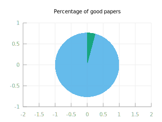

Baby steps for ML
怎样学习机器学习？吴恩达曾经给出过他的答案：不断复现他人paper中的成果。
以下是我自接触机器学习以来的一些经验总结。
0. Know what you're doing
-
ML = optimize parameters of some function to minimize error
-
DL = optimize parameters of some deep function to minimize error
-
RL = optimize parameters of some function to maximize reward
-
ML Research = optimize parameters of one's brain to fit experiment results and minimize confusion
-
DL Research = optimize ML algorithms and (occasionally) find out how the brain works
-
RL Research = solve real-world problems by converting them into simulated ones
1. 发现问题 Shoot the right foot

机器学习是解决问题的一种方法，而要解决一个问题，我们首先要发现它。对身边问题不敏感的人不适合搞机器学习。
一个机器学习研究者应该可以随时列出生活中存在的100个亟待解决的问题，然后每月解决其中的几个。
2. 数据合成 Data Synthesis
机器学习最适合解决那些【数据很便宜，逻辑很复杂】的问题，比如机器学习在图像识别上的大规模应用，就是基于我们获取图像的成本，远远低于我们编写图像识别逻辑的成本。因此低成本地获取数据对机器学习是非常重要的，比如现在有很多研究者通过CG方法合成图像来训练视觉应用。
可能有人说计算机生成的数据集，与真实世界收集的数据相比，必然会有比较大的bias。实际上这完全取决于研究者对具体领域的了解。以视觉为例，如今的主流游戏引擎可以轻而易举地渲染照片级的画面，而DeepMind最近开源的DeepMindLab也不过就是一个游戏引擎。
Update: OpenAI刚刚开源了Gym
对于各类RL应用，数据合成则更是不可或缺的：由于时间、能耗和安全性的限制，我们不可能真的让一条 random-initialized 的机械臂帮我们实现运动控制的 training loop。我们仍将大量地依赖软件仿真（比如这样）。
If you want to solve Computer Vision, you have to solve Computer Graphics. -- Geoffrey Hinton
3. 最小化 Mnistification
在实现一个新的方法/架构之前，总是先将其最小化。
- ImageNet wasn't built in one day
- not even MNIST
最小化的数据集，最小化的网络架构……可以帮助我们更快地评估一个方法的 performance 和 robustness.
4. 善于品味 Taste before read
每天都有10份新的ML Paper，怎么办？科学讲究的是成果复现，而工程讲究的是品味。拿到一篇paper，先看文笔，他能在50个词之内讲清楚他的问题吗？然后以1.0页/秒的速度扫描全文，看看一共配了多少插图？
三句话讲不清楚问题，或者全文无图，是作者不重视成果的体现。
5. Signs of danger (IMO)
- Addicted to reading & posting things on Zhihu
- Long, verbose Python code without comments
- Repeatedly looking for data and challenges on Kaggle
- Playing with hyper-parameters for over a day
- Highlight one's error% in bold font
- Imagining pure ML startups